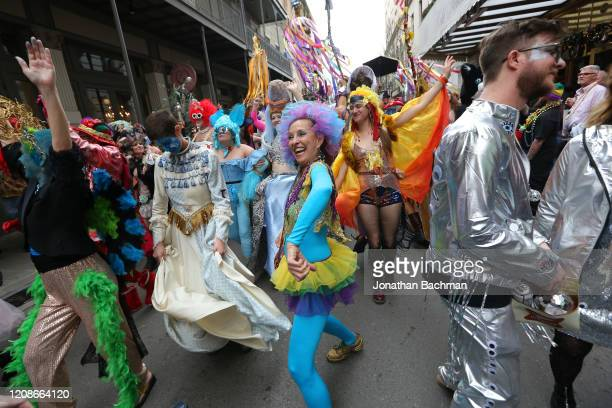
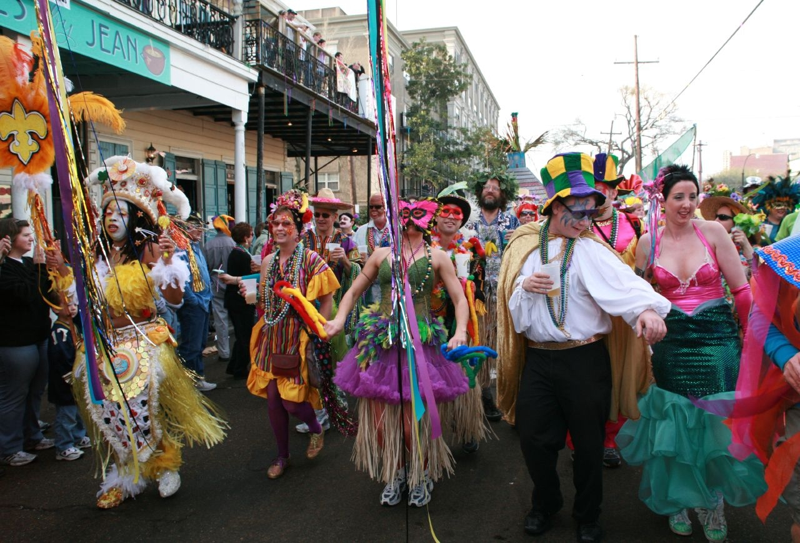
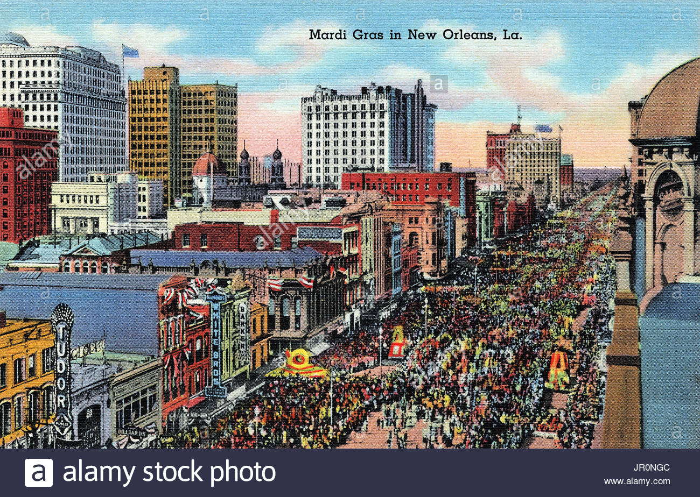
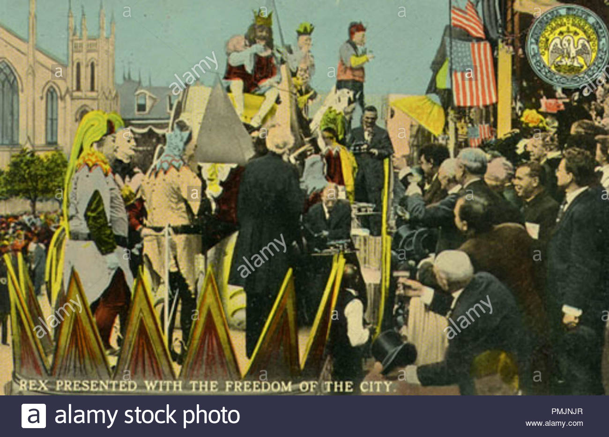
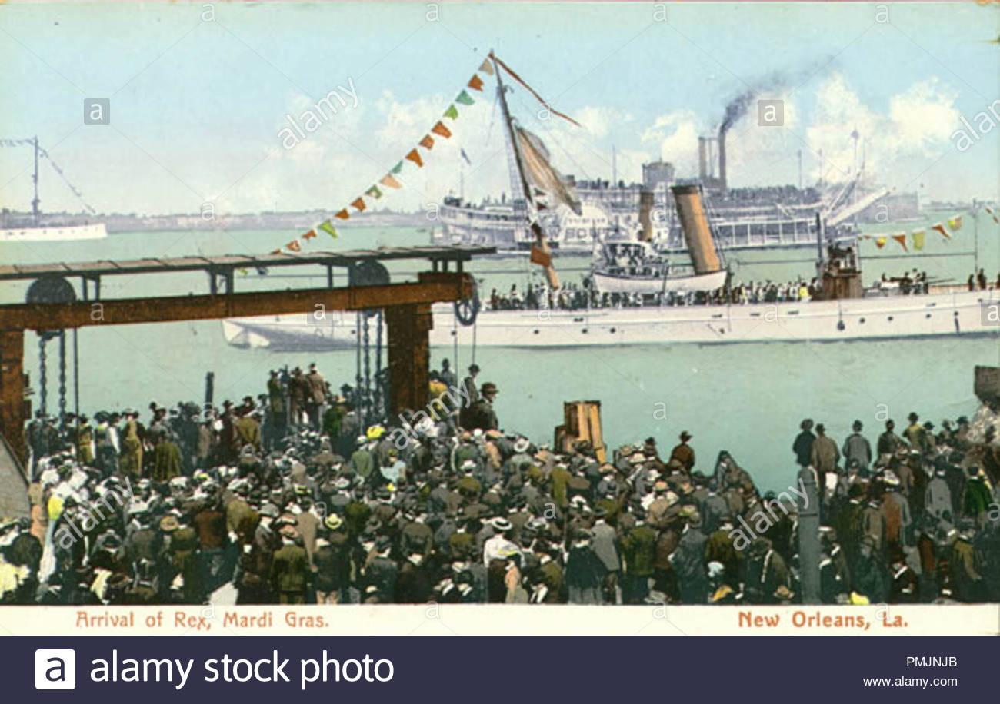

Revelers on Royal Street in the French Quarter, Mardi Gras Day 2019

Revelers on St.
Charles Avenue, 2007

Rex in procession down Canal Street; postcard from around 1900

Rex, presented with freedom of the city; early 20th century
postcard

Arrival of Rex, monarch of Mardi Gras, as seen on an early
20th-century postcard
The holiday of Mardi Gras is celebrated in all of Louisiana, including the city of New Orleans.
Celebrations are
concentrated for about two weeks before and through Shrove Tuesday, the day before Ash Wednesday (the
start of
lent in the Western Christian tradition). Usually there is one major parade each day (weather
permitting); many
days have several large parades. The largest and most elaborate parades take place the last five days of
the
Mardi Gras season. In the final week, many events occur throughout New Orleans and surrounding
communities,
including parades and balls (some of them masquerade balls).
The parades in New Orleans are organized by social clubs known as krewes; most follow the same parade
schedule
and route each year. The earliest-established krewes were the Mistick Krewe of Comus, the earliest, Rex,
the
Knights of Momus and the Krewe of Proteus. Several modern "super krewes" are well known for holding
large
parades and events, such as the Krewe of Endymion (which is best known for naming celebrities as grand
marshals
for their parades), the Krewe of Bacchus (similarly known for naming celebrities as their Kings), as
well as the
Zulu Social Aid & Pleasure Club—a predominantly African American krewe. Float riders traditionally toss
throws
into the crowds. The most common throws are strings of colorful plastic beads, doubloons, decorated
plastic
"throw cups", Moon Pies, and small inexpensive toys. Major krewes follow the same parade schedule and
route each
year.
While many tourists center their Carnival season activities on Bourbon Street, major parades originate in
the
Uptown and Mid-City districts and follow a route along St. Charles Avenue and Canal Street, on the
upriver side
of the French Quarter. Walking parades - most notably the Krewe du Vieux and Chewbacchus - also take
place
downtown in the Faubourg Marigny and French Quarter in the weekends preceding Mardi Gras day. Mardi Gras
day
traditionally concludes with the "Meeting of the Courts" between Rex and Comus.